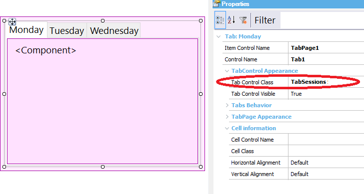
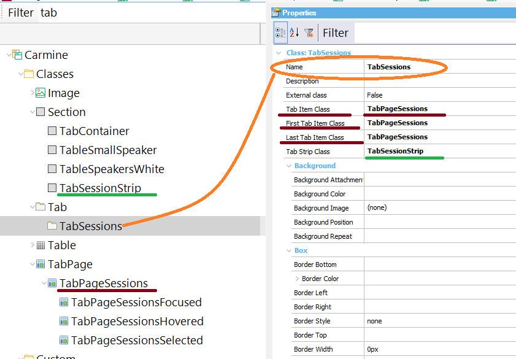
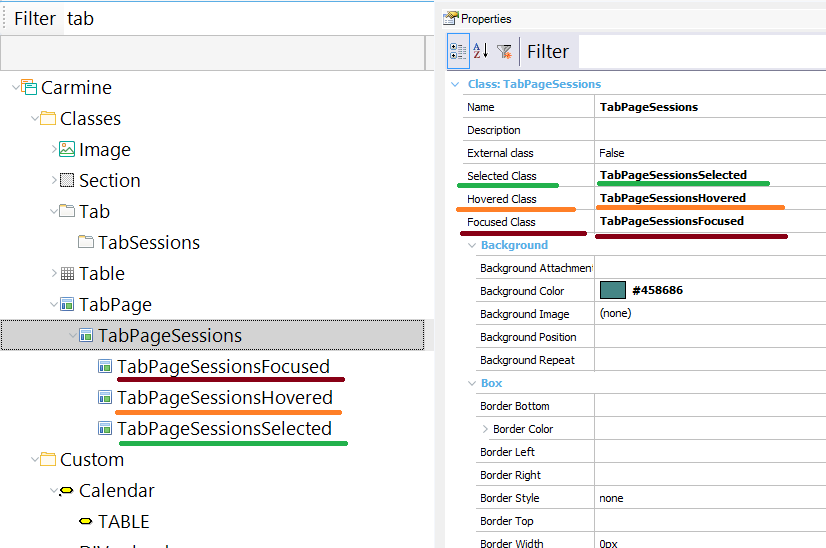
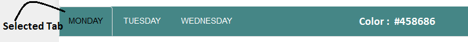
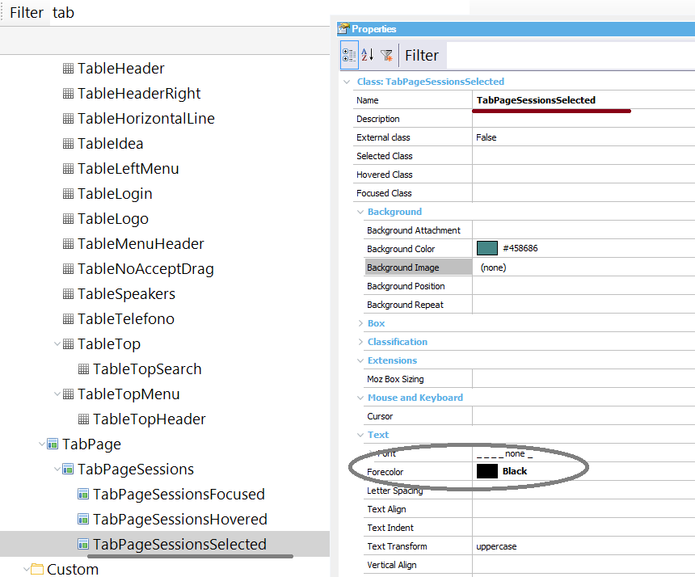

The Tab control for web appearance can be configured using the following properties: Tab Control Class propertyIt's a control property that determines the Theme Class that will be associated with the Tab control. The predetermined class for Tab controls is "Tab", but you can create other classes under the Tab class in the Theme. See the pictures below.  TabPage ClassThe control's tab pages can be styled using class properties which are grouped under the Tab Class (or any of its descendants). These properties are as follows:
 How to change the effects on hover, focus, and selection of the tab pagesTab pages can change their style when the user hovers over any them, or when he selects or sets the focus on a tab page. This is achieved using the following class properties which are grouped under the TabPage class:
These classes should be TabPage classes or their descendants.  ExampleSuppose that you need to have the tab control shown in the following picture:  The Tab Control Class property is "TabSessions" in this example. The TabSessions class has the following associations:
The TabPageSessions and the TabSessionStrip property have the background color set to #458686 and the following font properties: .TabPageSessions The TabPageSessions "Selected Class property" is set to TabPageSessionsSelected class. This class sets the ForeColor property to black, as it is the desired design for the selected tab pages.

|
| Backlinks |
| Tab control for web |